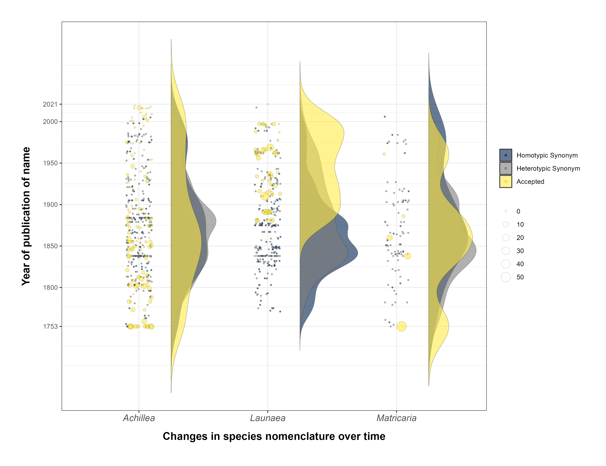

Plotting nomenclatural changes
Source:vignettes/plotting_nomenclatural_changes.Rmd
plotting_nomenclatural_changes.RmdInformation concerning the year of publication of a species and its
current status, obtained from the taxonomically validated Plants of the
World Online database, can offer valuable insights into temporal trends
related to changes in species nomenclature.
Employing the World Checklist of Vascular Plants (WCVP) accessible
via RBG Kew’s Plants of the World Online (POWO) database entails a
thorough examination of type specimens, representative herbarium
material, protologues, and other pertinent literature housed in the
herbariums, some of which required detailed systematic study.
In the pursuit of advancing this knowledge, our objective was to
automatically generate graphics that delineate the resolution of
nomenclatural issues, the creation of new combinations and new names
proposed over time. Additionally, the graphics also should depict
validated names of taxa.
In this article, we illustrate the utilization of the package’s
accGraph function for automatically generate graphics that
showcase the nomenclatural changes over time. This versatile function is
capable of producing two distinct types of graphics: one depicting the
accumulation of formally described species within each genus or family,
and the other illustrating changes in species nomenclature over time.
The second type of graphic (focus of this article) allows for the
comparison of variations in the data, accommodating multimodal
distributions, such as those with multiple peaks representing years
characterized by numerous changes in nomenclature.
To employ this function effectively, it is necessary to have data
stored in a spreadsheet or dataset generated using the
powoSpecies function with the synonyms
argument set to TRUE.
Setup
Install the latest developmental version of expowo from GitHub:
#install.packages("devtools")
devtools::install_github("DBOSlab/expowo")1. Plotting nomenclatural changes for the entire dataset
If your dataset comprises species from multiple genera, the
accGraph function has the capability to automatically
generate a graphical representation illustrating historical changes in
species nomenclature using the data from those genera.
In this example, it is noteworthy that the parameter
spp_acc is set as TRUE. It is because the argument
spp_acc will define the creation of the second type of
graphic that depicts nomenclatural changes over time. The dynamics of
nomenclatural changes are visually represented through the varying
densities of curves and circles between the publication years. Currently
accepted names are depicted in gray, and their size is proportionally
scaled to the associated homotypic or heterotypic synonyms (in yellow)
that were published.
First, to get the graphic, we extracted all data of the genera
Achillea, Matricaria and Launaea from Plants
of the World Online using powoSpecies as follows:
newdata <- powoSpecies(family = "Asteraceae",
genus = c("Achillea", "Matricaria", "Launaea"),
synonyms = TRUE,
save = FALSE,
dir = "Asteraceae_results",
filename = "Asteraceae_spp")Then, we used the newly developed function accGraph to
plot a violin graph for the three genera within Asteraceae.
accGraph(inputdf = newdata,
verbose = TRUE,
spp_acc = FALSE,
spp_changes = TRUE,
spp_changes_col = "genus",
genus_plots = TRUE,
save = TRUE,
dir = "results_accGraph",
filename = "cumulative_discovery_Asteraceae_",
format = "jpg")
FIGURE 1. The temporal dynamics of nomenclatural changes in three genera.